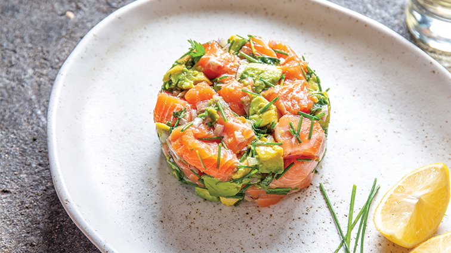

Menu de délicieuses bouchées
plats entrées
-
Tartare de Saumon aux Agrumes
Cette entrée se compose de saumon frais finement découpé en petits dés, mélangé avec une combinaison de zestes d'agrumes (citron, lime et orange) pour apporter une touche de fraîcheur et une légère acidité. Le tout est agrémenté d'une vinaigrette à base d'huile d'olive extra vierge, de câpres finement hachées, et de quelques brins d'aneth frais pour un parfum herbacé délicat..

- melon, jambon et figues fraiche
Une salade estivale fraîche et légère à base de melon et de figues
Plats principaux
-
Mbaxalu Saloum
Le plat est servi avec du riz parfumé ou du couscous, qui permet de compléter le repas en absorbant la sauce onctueuse et savoureuse..
-
Domoda
Le Domoda est généralement servi avec du riz, du couscous ou du fonio, permettant de savourer pleinement la sauce crémeuse et onctueuse.

Desserts
-
Fondue au chocolat
Assortiment de fruits et de guimauves servis avec une riche fondue au chocolat.
-
Gâteaux aux citrons et aux framboises
gâteau au citron composé de yaourt, de framboises fraîches et d'un glaçage à la crème au beurre au citron frais.